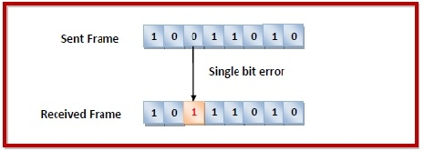

unit-2
wireless transmission
transmission is a form of unguided media. Wireless communication involves no physical link established between two or more devices, communicating wirelessly. Wireless signals are spread over in the air and are received and interpreted by appropriate antennas.
When an antenna is attached to electrical circuit of a computer or wireless device, it converts the digital data into wireless signals and spread all over within its frequency range.
The receptor on the other end receives these signals and converts them back to digital data.
A little part of electromagnetic spectrum can be used for wireless transmission.

communication satellites
A communication satellite is an artificial satellite that acts as a large repeater in the sky. It receives signals from the source transmitter, amplifies using transponders, and relays them to the receiver. Thus, it creates a communication channel between locations of the earth that would not have been able to communicate due to long distance or obstruction by earth’s curvature.
Communication satellites may be owned by government or private organizations.there are more than 2000 communication satellites in the sky. Some of its uses are
- Internet
- Military operations
- television
- Telephone
- Radio

telephone network
telephone Network is used to provide voice communication. Telephone Network uses Circuit Switching. Originally, the entire network was referred to as a plain old telephone system (POTS) which uses analog signals. With the advancement of technology, i.e. in the computer era, there comes a feature to carry data in addition to voice. Today’s network is both analogous and digital.
Major Components of Telephone Network: There are three major components of the telephone network:
- local loops
- trunks
- switching offices
There are various levels of switching offices such as end offices, tandem offices, and regional offices. The entire telephone network is as shown in the following figure:

local loops
Local Loops are the twisted pair cables that are used to connect a subscriber telephone to the nearest end office or local central office. For voice purposes, its bandwidth is 4000 Hz. It is very interesting to examine the telephone number that is associated with each local loop. The office is defined by the first three digits and the local loop number is defined by the next four digits defines.
trunks
It is a type of transmission medium used to handle the communication between offices. Through multiplexing, trunks can handle hundreds or thousands of connections. Mainly transmission is performed through optical fibers or satellite links.
switching offices
As there is a permanent physical link between any two subscribers. To avoid this, the telephone company uses switches that are located in switching offices. A switch is able to connect various loops or trunks and allows a connection between different subscribes
data link layer
The data link layer is the second layer from the bottom in the OSI (Open System Interconnection) network architecture model. It is responsible for the node-to-node delivery of data. Its major role is to ensure error-free transmission of information. DLL is also responsible for encoding, decode and organizing the outgoing and incoming data. This is considered the most complex layer of the OSI model as it hides all the underlying complexities of the hardware from the other above layers.
errors
When bits are transmitted over the computer network, they are subject to get corrupted due to interference and network problems. The corrupted bits leads to spurious data being received by the destination and are called errors.
types of errors
Errors can be of three types, namely single bit errors, multiple bit errors, and burst errors.
ingle bit error − In the received frame, only one bit has been corrupted, i.e. either changed from 0 to 1 or from 1 to 0.

Multiple bits error − In the received frame, more than one bits are corrupted.

Burst error − In the received frame, more than one consecutive bits are corrupted.
img src="img5.mhtml"
error control
Error detection − Error detection involves checking whether any error has occurred or not. The number of error bits and the type of error does not matter.
Error correction − Error correction involves ascertaining the exact number of bits that has been corrupted and the location of the corrupted bits.
For both error detection and error correction, the sender needs to send some additional bits along with the data bits. The receiver performs necessary checks based upon the additional redundant bits. If it finds that the data is free from errors, it removes the redundant bits before passing the message to the upper layers.
error detection
there are three main techniques for detecting errors in frames: Parity Check, Checksum, and Cyclic Redundancy Check (CRC).
party control
The parity check is done by adding an extra bit, called parity bit to the data to make a number of 1s either even in case of even parity or odd in case of odd parity.
While creating a frame, the sender counts the number of 1s in it and adds the parity bit in the following way
In case of even parity: If a number of 1s is even then parity bit value is 0. If the number of 1s is odd then parity bit value is 1.
In case of odd parity: If a number of 1s is odd then parity bit value is 0. If a number of 1s is even then parity bit value is 1.
On receiving a frame, the receiver counts the number of 1s in it. In case of even parity check, if the count of 1s is even, the frame is accepted, otherwise, it is rejected. A similar rule is adopted for odd parity check.
The parity check is suitable for single bit error detection only.
check sum
in this error detection scheme, the following procedure is applied
Data is divided into fixed sized frames or segments.
The sender adds the segments using 1’s complement arithmetic to get the sum. It then complements the sum to get the checksum and sends it along with the data frames.
The receiver adds the incoming segments along with the checksum using 1’s complement arithmetic to get the sum and then complements it.
If the result is zero, the received frames are accepted; otherwise, they are discarded.
Cyclic Redundancy Check (CRC)
Cyclic Redundancy Check (CRC) involves binary division of the data bits being sent by a predetermined divisor agreed upon by the communicating system. The divisor is generated using polynomials.
Here, the sender performs binary division of the data segment by the divisor. It then appends the remainder called CRC bits to the end of the data segment. This makes the resulting data unit exactly divisible by the divisor.
The receiver divides the incoming data unit by the divisor. If there is no remainder, the data unit is assumed to be correct and is accepted. Otherwise, it is understood that the data is corrupted and is therefore rejected.
error correction
error correction techniques find out the exact number of bits that have been corrupted and as well as their locations. There are two principle ways
Backward Error Correction (Retransmission) − If the receiver detects an error in the incoming frame, it requests the sender to retransmit the frame. It is a relatively simple technique. But it can be efficiently used only where retransmitting is not expensive as in fiber optics and the time for retransmission is low relative to the requirements of the application.
Forward Error Correction − If the receiver detects some error in the incoming frame, it executes error-correcting code that generates the actual frame. This saves bandwidth required for retransmission. It is inevitable in real-time systems. However, if there are too many errors, the frames need to be retransmitted.